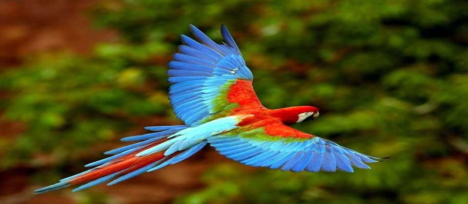
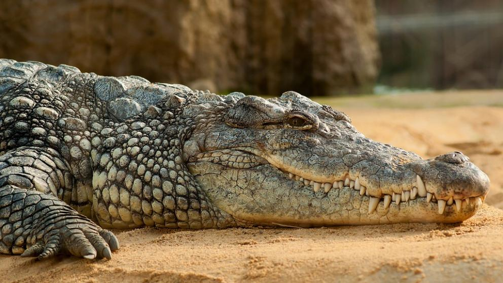
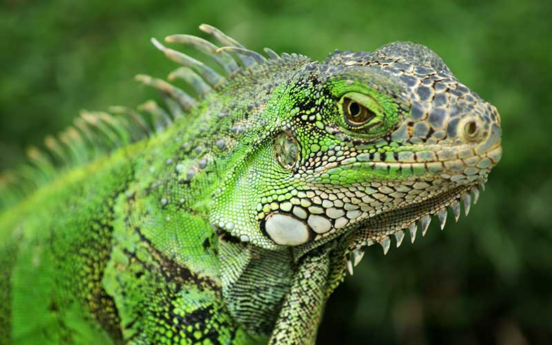

fauna
La república de Honduras, es un país centroamericano, geográficamente ubicado dentro de los trópicos, lo que le permite que su naturaleza brinde un habitat adecuado tanto para la flora y esta a su vez permite que se desarrolle una gran diversidad de fauna.Atras
Muchas de estas especies se encuentran en vía de extinción, lo cual ha planteado al gobierno hondureño, secretarías y organizaciones naturistas nacionales e internacionales, promover y velar por la protección tanto la biodiversidad de especies, como las reservas naturales existentes.
Los animales grandes no son muy numerosos pero hay cientos de especies de reptiles, anfibios y pájaros; lagartos y muchas variedades de peces en las corrientes. monos, murciélagos y miríadas de pájaros abundan en los árboles.
Aves
La Observación de aves en Honduras es uno de los principales atractivos turísticos del país, si bien muchas aves pueden observarse en las ciudades y parques urbanos, la mayoría y la gran diversidad de aves habitan las zonas rurales y zonas no habitadas, por lo que se pueden apreciar en las reservas biológicas y en los parques nacionales.Honduras posee una gran diversidad de aves, con más de 700 especies de presencia estable
Reptiles
Los reptiles que habitan Honduras, incluyen serpientes, lagartos, cocodrilos y tortugas. Honduras cuenta con una amplia biodiversidas, con una herpetofauna que incluye de 217 hasta 259 especies de reptiles, que se agrupan en 3 ordenes
1 tortugas
2 cocodrilos
3 lagartos